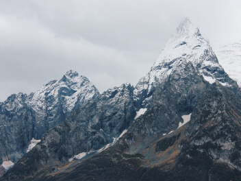
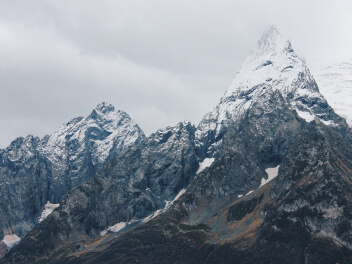

What haven't we seen there?
According to VTsIOM polls, while 95% of Russians dream of traveling abroad, only 36% plan to spend their vacation in their own country. Yet, Russia is a diverse and breathtaking universe, encompassing the gentle seas of the south, the dense forests of Sayan, and the harsh ice of the Putorana Plateau. The best part? You don't need to have millions in your bank account, a passport, or endure long flights to experience these natural wonders. Take inspiration from Vera Bashmakova, a brave young mother who took her three children on a 20,000-kilometer road trip across her native country in her trusty Lada car.
- Time zones 11
- UNESCO Natural World Heritage Sites 12
- UNESCO Cultural World Heritage Sites 16
- Natural reserves 105
- Airports 241


 
